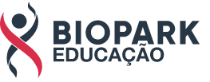

|  | Sobre o Biopark| Invista| Empresas| Trabalhe Conosco| |
A área física representa um grande custo para as empresas. Aqui no Biopark, o empresário tem aluguel gratuito para uso de salas exclusivas ou compartilhadas pelo período de até três anos, além de não pagar por luz, água, internet, serviços de recepção e segurança.
A necessidade de mão de obra qualificada não será mais um empecilho para sua empresa crescer. Em nossa Faculdade, contamos com estrutura para formação de pessoas com foco no mercado de trabalho e você terá acesso aos melhores profissionais para formação de sua equipe. Por meio do curso Connect, formamos profissionais qualificados para a área de Programação em apenas seis meses – este modelo está sendo replicado em larga escala para atender as empresas residentes nos mais diversos domínios.
Resolva os problemas de sua empresa com acesso a até 30 horas de mentorias por ano com profissionais que possuem alta experiência no mundo dos negócios. As mentorias podem ter caráter técnico ou gerencial, atendendo de forma prática e completa todas as áreas da empresa com foco em eliminar o que impede seu negócio de crescer. Após cada mentoria, você será acompanhado na realização de planos de ação para aplicação das soluções indicadas.
No Biopark, você pode ter acesso a financiamento de até 10 anos para compra de terreno e construção. Isso lhe dará mais segurança para investir no que for necessário para a operação da empresa. Além disso, por meio de nossa expertise, podemos lhe auxiliar no processo de solicitação de aporte pelo Finame – que financia a produção e aquisição de máquinas e equipamentos via BNDES.
Conseguir crédito no mercado por vezes é algo difícil e burocrático, especialmente no início de um negócio. Para ajudar as empresas do Ecossistema nesse processo, somos parceiros da Sociedade Garantidora de Crédito do Oeste do Paraná – Garantioeste. Por meio de nosso aporte, contribuímos para o acesso a crédito junto às instituições financeiras com a concessão de cartas de garantia. O valor pode chegar a R$ 180 mil com condições especiais para as empresas aprovadas.
O desenvolvimento de sua empresa no Ecossistema ganhará destaque e visibilidade com acesso a espaços em feiras e congressos, meios de comunicação, participação em entrevistas, lives, vídeos, materiais publicitários e eventos exclusivos.
Você precisa de uma gestão simples, fácil e ágil. Com base em nossa experiência com gerenciamento por Projetos na Prati-Donaduzzi e no Biopark, oferecemos circuitos de capacitação e atualização em áreas que são fundamentais para o crescimento da sua empresa, tudo com abordagem 100% prática.
Você também contará com o acompanhamento de um Multiplicador – profissional dedicado a oferecer o suporte no dia a dia e apoiar o sucesso da sua empresa no Ecossistema.
Ao fazer parte do Ecossistema do Biopark, sua empresa passa a integrar uma plataforma que permite a apresentação de seus produtos e serviços com foco na realização de negócios com outras empresas residentes.
Você está com dificuldade para vender? Estamos estruturando uma equipe para ajudar as empresas residentes a fazerem bons negócios, construindo a ponte entre as demandas do mercado e os produtos e serviços disponíveis dentro do Ecossistema